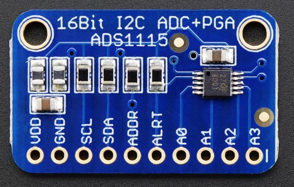

I²C Bus¶
This component sets up the i²c bus for your ESP32 or ESP8266. It’s used for several other components:
 |
 |  |
| PCA9685 PWM | ADS1115 | BMP085 |
 |
 |
|
| HDC1080 | HTU21D |
In order for those components to work correctly, you need to define the i²c bus in your configuration.
# Example configuration entry
i2c:
sda: 21
scl: 22
Configuration variables:¶
- sda (Optional, pin): The pin for the data line of the i²c bus. Defaults to the default of your board (usually GPIO21 for ESP32 and GPIO4 for ESP8266).
- sdc (Optional, pin): The pin for the clock line of the i²c bus. Defaults to the default of your board (usually GPIO22 for ESP32 and GPIO5 for ESP8266).
- frequency (Optional, float): Only on ESP32. Set the frequency the i²c bus should operate on. Defaults to “100kHz”. Accepts most metric suffixes.